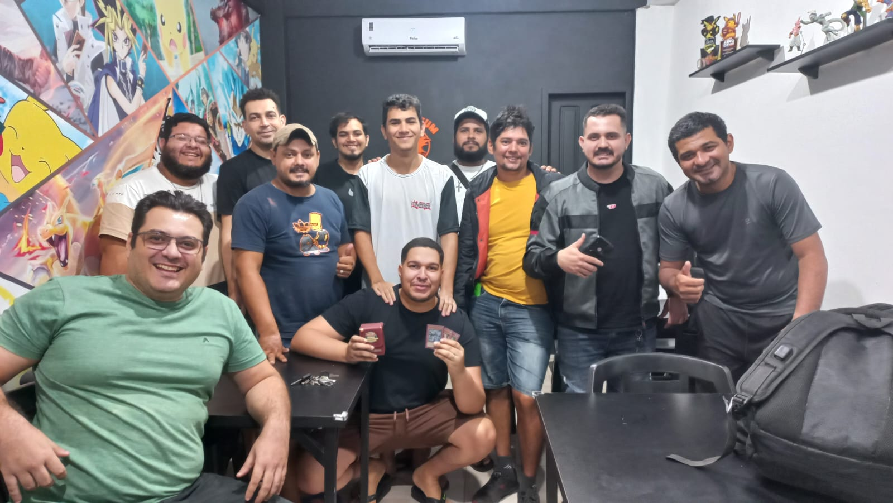
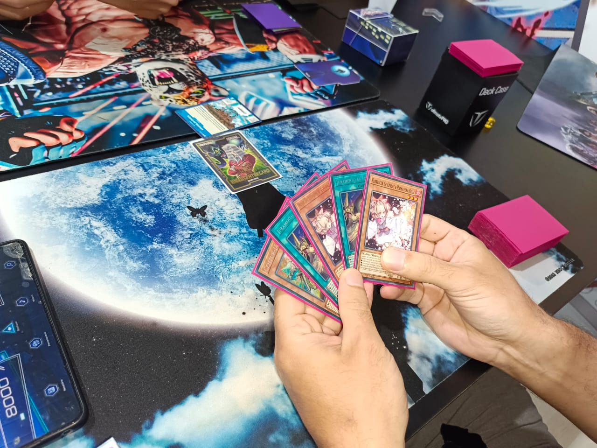
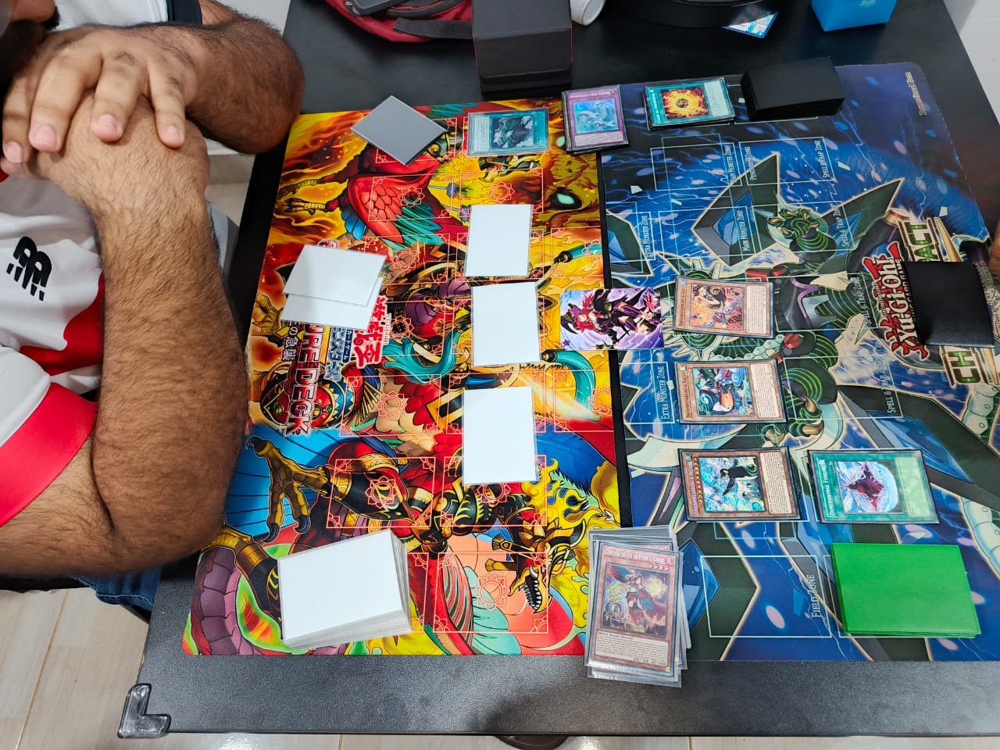

A Liga Yu-Gi-Oh! Acre é uma comunidade de jogadores que se reúne para duelar, trocar cartas e conversar sobre estratégias. Seja você iniciante ou veterano, todos são bem-vindos! Nosso objetivo é criar um ambiente divertido e acolhedor para quem quer aprender, competir ou apenas aproveitar o jogo.


Yu-Gi-Oh! é um jogo de cartas para duas pessoas. Cada jogador monta um baralho com monstros, magias e armadilhas e começa com 8000 pontos de vida. O objetivo é reduzir os pontos do oponente a zero. Você escolhe suas jogadas com base nas cartas da mão e nos efeitos do seu baralho. É um jogo de estratégia, aprendizado e troca com outros jogadores — ótimo para quem curte pensar e se divertir.
A Liga Yu-Gi-Oh! Acre é uma comunidade de jogadores que se reúne para duelar, trocar cartas e conversar sobre estratégias. Seja você iniciante ou veterano, todos são bem-vindos! Nosso objetivo é criar um ambiente divertido e acolhedor para quem quer aprender, competir ou apenas aproveitar o jogo.
